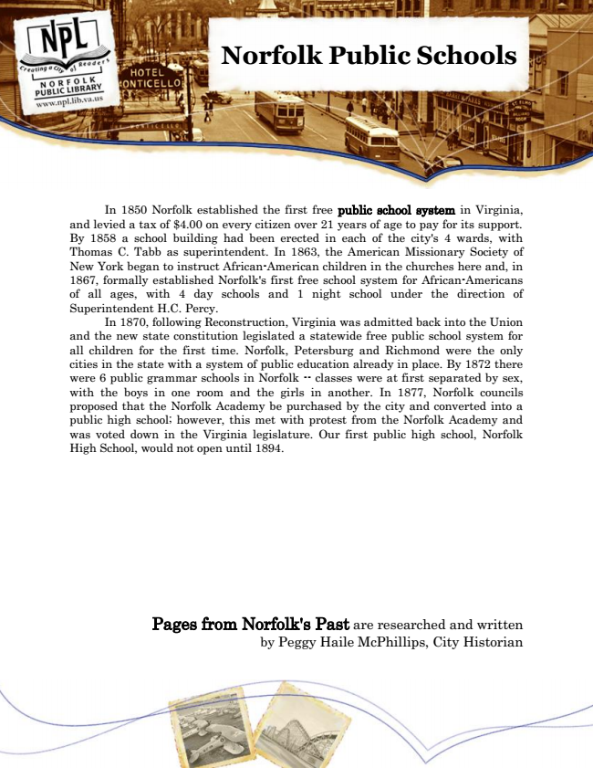

Norfolk Public Schools
In 1850 Norfolk established the first free public school system in Virginia, and levied a tax of $4.00 on every citizen over 21 years of age to pay for its support. By 1858 a school building had been erected in each of the city's 4 wards, with Thomas C. Tabb as superintendent. In 1863, the American Missionary Society of New York began to instruct African-American children in the churches here and, in 1867, formally established Norfolk's first free school system for African-Americans of all ages, with 4 day schools and 1 night school under the direction of Superintendent H.C. Percy.
In 1870, following Reconstruction, Virginia was admitted back into the Union and the new state constitution legislated a statewide free public school system for all children for the first time. Norfolk, Petersburg and Richmond were the only cities in the state with a system of public education already in place. By 1872 there were 6 public grammar schools in Norfolk -- classes were at first separated by sex, with the boys in one room and the girls in another. In 1877, Norfolk councils proposed that the Norfolk Academy be purchased by the city and converted into a public high school; however, this met with protest from the Norfolk Academy and was voted down in the Virginia legislature. Our first public high school, Norfolk High School, would not open until 1894.
Pages from Norfolk's Past are researched and written by Peggy Haile McPhillips, City Historian